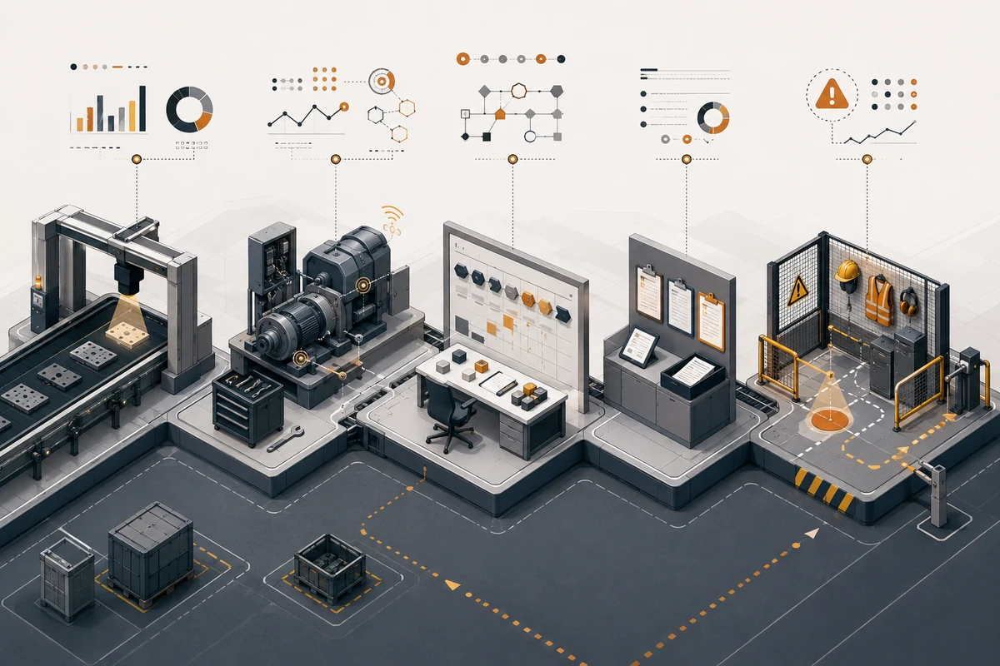

Гайд · ИИ для бизнеса
ИИ для производства: сценарии, внедрение и окупаемость
В опросе Rockwell Automation 2025 года 50% из 1560 руководителей производственных компаний планировали применять ИИ для контроля качества.
Автор · проверено 19 июня 2026 г.

Содержание
В марте 2025 года Rockwell Automation опросила 1560 руководителей производственных компаний из 17 стран. Половина респондентов планировала применять ИИ и машинное обучение для контроля качества в течение 2025 года. Это был самый популярный производственный сценарий второй год подряд.
Опрос фиксирует инвестиционные планы крупных компаний. На уровне конкретного завода решение начинается с собственной экономики: сколько стоит пропущенный дефект, час простоя, повторная обработка партии, ручная проверка или поиск причины аварии.
У производственного ИИ есть понятная рабочая роль. Система замечает отклонение, собирает контекст и передаёт человеку информацию для решения. Ценность проекта видна в метриках участка, а технология остаётся средством.
Коротко
- Точка входа — одна измеримая потеря на одном участке.
- Подходящие сценарии — контроль качества, диагностика оборудования, разбор сменных журналов, поиск по инструкциям и помощь диспетчеру.
- Данные должны описывать и нормальную работу, и отклонения: изображения, показания датчиков, ремонты, партии, сменные записи.
- Роль системы на пилоте — рекомендация, сигнал или черновик решения с подтверждением ответственного сотрудника.
- Экономика считается от фактического брака, простоя, трудозатрат, повторной обработки и расходов на поддержку.
- Видео с сотрудниками требует проверки по 152-ФЗ до передачи данных модели или подрядчику.
Для первичного отбора процессов пригодится карта выбора ИИ-проекта. Здесь разберём производственную специфику: линию, данные, цену ошибки и работу в смене.
Где ИИ в производстве даёт эффект
Производство постоянно оставляет цифровые следы: фотографии деталей, телеметрию станков, записи о ремонтах, протоколы качества, сменные отчёты, данные 1С, MES и ERP. Из этих следов можно собрать задачу для модели.
Карточка производственного проекта состоит из четырёх пунктов:
- Потеря: брак, простой, задержка, перерасход, повторный ремонт.
- Сигнал: изображение, датчик, журнал, заявка, партия, смена, инструкция.
- Действие: отметить риск, определить тип дефекта, найти похожий случай, подготовить сводку.
- Метрика: пропущенные дефекты, ложный брак, время диагностики, часы простоя, стоимость обработки.
Пробелы в карточке показывают объём подготовительной работы. Иногда участку нужны дополнительные измерения, единый справочник причин или дисциплина заполнения журналов. Такая подготовка полезна сама по себе: после неё становится ясно, нужен ли ИИ.
На производстве модели обычно выполняют четыре функции:
- Находят отклонения на изображениях и в показаниях оборудования.
- Оценивают риск отказа, просрочки или нестабильного режима.
- Приводят сменные записи и комментарии операторов к единой структуре.
- Подбирают инструкцию, похожий инцидент или маршрут эскалации.
Матрица сценариев: данные, пилот, метрика, риск

| Сценарий | Какие данные нужны | Первый пилот | Главная метрика | Главный риск |
|---|---|---|---|---|
| Контроль качества | Фото или видео, стабильный свет, примеры нормы и дефектов | Один тип дефекта на одной операции | Пропущенные дефекты, ложный брак, время проверки | Нестабильная съёмка и разная трактовка дефектов |
| Обслуживание оборудования | Телеметрия, аварии, история ТО, журналы операторов | Один класс оборудования и одна повторяющаяся неисправность | Время диагностики, простой, повторный ремонт | Мало отказов и неполные записи о причинах |
| Планирование и диспетчеризация | Заказы, мощности, смены, переналадки, ограничения | Рекомендации диспетчеру по очереди задач | Просрочки, загрузка оборудования, число переналадок | В данных отсутствуют реальные ограничения участка |
| Сменные журналы и инциденты | Отчёты, причины остановок, инструкции | Сводка смены и классификация причин | Время разбора, полнота отчёта, повторные инциденты | Разные форматы записей и пропуски обязательных полей |
| Энергия и режимы процесса | Параметры линии, потребление, партии, температура, загрузка | Поиск аномалий на одном энергоёмком процессе | Потребление на единицу продукции, стабильность режима | Влияние сырья, погоды, загрузки и других факторов |
| Безопасность и регламенты | Камеры, зоны, правила, журналы нарушений | Сигнал ответственному сотруднику | Время реакции, полнота фиксации | Персональные данные и цена ложного срабатывания |
Для первого проекта важна проверяемость. Команда должна получить данные, воспроизвести условия, ограничить последствия ошибки и измерить результат в обычной смене.
Компьютерное зрение для контроля качества
Камера фиксирует изделие, модель выделяет подозрительную область, контролёр подтверждает решение. На качество распознавания влияют свет, положение детали, блики, скорость линии, партии сырья и правила разметки. Каждый фактор нужно закрепить в протоколе пилота.
Перед запуском проверьте:
- изделие проходит через повторяемую точку съёмки;
- камера, свет, фон и выдержка дают сопоставимые кадры;
- специалисты по качеству одинаково определяют каждый класс дефекта;
- выборка охватывает нормальные изделия, частые отклонения и сложные пограничные случаи;
- отдельная тестовая выборка собрана из других партий или смен;
- контролёр фиксирует итог по спорным изделиям;
- бизнес-метрики включают пропущенные дефекты, ложный брак, время проверки и повторную обработку.
Границы первого пилота удобно задавать одним классом дефекта: царапиной, сколом, деформацией края, ошибкой маркировки или отсутствующим компонентом. После проверки на новых партиях команда получает честную картину качества модели и стоимости эксплуатации.
Результат следует считать отдельно для двух типов ошибки. Пропущенный дефект уходит дальше по линии или к клиенту. Ложное срабатывание отправляет нормальное изделие на повторную проверку. Допустимый баланс определяет служба качества, исходя из стоимости каждого события.
Предиктивное обслуживание оборудования
Прогноз отказа требует истории неисправностей, телеметрии перед остановкой и точных записей о ремонте. На многих предприятиях первым полезным продуктом становится помощник инженера: он собирает похожие инциденты, коды ошибок, параметры узла и нужные фрагменты инструкции.
В феврале 2025 года McKinsey описала несколько сценариев генеративного ИИ для технического обслуживания: разбор причин отказа, поиск по документации, помощь в диагностике и сохранение знаний опытных специалистов. Эти задачи можно проверять на данных одного класса оборудования.
Представим линию, которая периодически останавливается из-за перегрева узла. Инженер вручную просматривает журнал смены, аварийные коды, последние ремонты и инструкцию. Помощник собирает эту информацию в одну карточку, находит похожие остановки и показывает порядок диагностики. Инженер выбирает действие и отмечает фактическую причину. Так появляется обратная связь для следующей версии системы.
Первые метрики здесь простые: время до установления причины, длительность простоя, доля повторных ремонтов и полнота журнала. Прогноз вероятности отказа можно добавлять после накопления качественной истории.
Планирование, сменные журналы и база знаний
Сменные журналы, заявки на ремонт, отчёты о браке и инструкции уже содержат материал для текстового помощника. Такой проект может работать на регулярной выгрузке и приносить пользу до подключения к контуру управления линией.
Помощник умеет:
- готовить сводку смены для руководителя;
- группировать причины остановок;
- находить повторяющиеся инциденты;
- подбирать инструкцию по неисправности;
- собирать черновик отчёта;
- отмечать записи без причины, времени или участка.
Эффект измеряют временем подготовки отчёта, полнотой обязательных полей, скоростью поиска инструкции и числом повторных инцидентов с уже известной причиной.
Для российских компаний отдельно выбирают контур обработки. Команда сравнивает локальное развёртывание, частное облако, GigaChat, YandexGPT и другие доступные модели по требованиям к данным, журналированию, доступам и стоимости эксплуатации. Решение принимают после классификации документов и проверки договора с поставщиком.
Как выбрать первый пилот
Перед бюджетом и техническим заданием ответьте на семь вопросов.
- Как часто возникает задача? Регулярный процесс даёт материал для обучения и проверки.
- Сколько стоит текущая потеря? Нужны данные по браку, простою, проверке, ремонту или просрочке.
- Где лежат сигналы? Укажите конкретные камеры, датчики, журналы, заявки и таблицы.
- Какую роль получит система? Зафиксируйте рекомендацию, предупреждение или черновик решения.
- Кто владеет метрикой? Ответственный сотрудник со стороны производства принимает результат и меняет процесс.
- Как изолировать пилот? Опишите одну линию, операцию, смену или класс оборудования.
- Что произойдёт после успешной проверки? Заранее оцените интеграции, поддержку и следующий участок.
Неясные ответы превращаются в список подготовки: измерить базовую линию, привести в порядок справочники, собрать выборку, назначить владельца, проверить правовой режим. После этого решение о разработке становится предметным. Общий подход подробно разобран в гайде как выбрать первый ИИ-проект в бизнесе.
Практический разбор
Выберите первый производственный пилот
Разложим один участок на потери, данные, риски и метрики и выберем процесс с проверяемой экономикой.
Оставить заявку на разборРасчёт окупаемости контроля качества: пример

Ниже показана формула на условных входных значениях. Это учебный расчёт, поэтому каждое число перед бюджетированием нужно заменить данными табеля, службы качества, бухгалтерии и результатами теста на участке.
Условная ситуация. Линия работает в две смены 22 дня в месяц. Контролёр тратит три часа за смену на проверку партии и спорных изделий.
Входные значения для примера:
- 2 смены в день;
- 3 часа проверки на смену;
- 22 рабочих дня в месяц;
- 700 рублей полной стоимости часа контролёра;
- условное значение эффекта после теста: 35% экономии времени;
- 45 000 рублей месячного эффекта от сокращения повторной обработки;
- 35 000 рублей ежемесячных расходов на поддержку;
- 450 000 рублей стоимости пилота.
Расчёт:
Ручная проверка: 2 × 3 × 22 = 132 часа в месяц.
Стоимость проверки: 132 × 700 = 92 400 рублей в месяц.
Экономия времени: 92 400 × 0,35 = 32 340 рублей в месяц.
Эффект до поддержки: 32 340 + 45 000 = 77 340 рублей в месяц.
Чистый эффект: 77 340 − 35 000 = 42 340 рублей в месяц.
Расчётный срок окупаемости: 450 000 / 42 340 ≈ 10,6 месяца.
При этих допущениях экономия рабочего времени даёт 32 340 рублей в месяц. На итог сильнее влияют стоимость дефекта, повторная обработка и расходы на поддержку. Чувствительность расчёта стоит проверить минимум по трём вариантам: осторожному, базовому и оптимистичному.
Структура бюджета для других сценариев разобрана в материале сколько стоит внедрение ИИ в компанию.
Сценарий: средняя линия с ручной проверкой
Процесс. Предприятие выпускает серийные детали. После одной операции контролёры осматривают поверхность и классифицируют царапины, сколы и нарушения формы. Результаты проверки записываются в журнал качества.
Решение. Камера снимает изделие в закреплённой точке. Модель выделяет подозрительные зоны и предлагает класс дефекта. Контролёр подтверждает итог, а его решение попадает в журнал проверки.
Подготовка. Служба качества описывает классы дефектов, команда фиксирует условия съёмки, собирает выборку из разных партий и формирует отдельный набор для приёмки.
Метрики. Доля пропущенных дефектов, ложный брак, время проверки, стоимость повторной обработки и стабильность результата по сменам.
Граница автоматизации. Контролёр принимает решение по спорным изделиям. После приёмки на новых партиях можно обсуждать автоматическую сортировку для классов с согласованной ценой ошибки.
Когда ИИ на производстве не окупится
Каждый пункт ниже — причина остановить закупку и подготовить процесс.
- Базовая линия неизвестна. Экономический эффект нельзя посчитать без стоимости брака, простоя, проверки и повторной обработки.
- Событие встречается редко. Выборки недостаточно для обучения и независимой проверки.
- Процесс постоянно меняется. Материалы, свет, поставщики, настройки или требования к качеству меняются быстрее, чем команда обновляет систему.
- Владелец со стороны производства не назначен. Рекомендации модели остаются без действия и обратной связи.
- Ошибка затрагивает безопасность или юридически значимое решение. Такой контур требует отдельной оценки рисков, процедур приёмки и резервного сценария.
- Правила работы с данными не определены. Команда ещё не согласовала цель обработки, хранение, доступ и передачу подрядчику.
Для первых трёх случаев нужен этап измерений и нормализации. Остальные требуют управленческого, юридического и безопасностного решения. Типовые причины провалов собраны в гайде об ошибках внедрения ИИ.
Российский контур: данные, 152-ФЗ и интеграции
Камера с изображением идентифицируемого сотрудника создаёт обработку персональных данных. До пилота нужно определить цель, правовое основание, состав данных, сроки хранения, роли доступа и порядок передачи подрядчику. Эти вопросы регулирует статья 6 закона № 152-ФЗ.
Статья 11 закона № 152-ФЗ связывает биометрические персональные данные с установлением личности по физиологическим или биологическим особенностям. Классификацию конкретной видеосистемы должен проверить юрист с учётом цели обработки и фактической логики идентификации.
Интеграции удобно наращивать по мере подтверждения эффекта:
- Выгрузка изображений, журналов или таблиц для анализа.
- Стенд с историческими данными и отдельной тестовой выборкой.
- Рекомендации на реальном потоке в режиме наблюдения.
- Чтение данных из 1С, MES, ERP или системы ТОиР.
- Автоматические действия только для принятых сценариев и с журналом решений.
Если требуется внешний разбор процесса, данных и цены ошибки, описание услуги есть на странице ИИ-аудита и консультации.
Вывод Malakhov AI

Рабочий производственный проект помещается на одной странице: участок, потеря, источник данных, действие системы, владелец метрики и критерий приёмки. Такой документ позволяет предметно обсудить бюджет с производством, ИТ, качеством и безопасностью.
Первый пилот должен ответить на один вопрос: уменьшает ли система выбранную потерю в обычной смене с приемлемой ценой ошибки. Для этого достаточно ограниченного участка и заранее собранной базовой линии.
Практический следующий шаг — выбрать процесс, собрать его показатели за репрезентативный период и заполнить карточку из четырёх пунктов: потеря, сигнал, действие, метрика. Выбор между компьютерным зрением, помощником по журналам, аналитической моделью и обычной автоматизацией появится из этой карточки.
FAQ
Что такое ИИ для производства простыми словами?
Это модели и программы, которые находят отклонения, оценивают риски, разбирают журналы и подбирают оператору нужную информацию. В типовом пилоте система работает как помощник контролёра, инженера или мастера смены.
С какого сценария начать внедрение ИИ на производстве?
Выберите часто повторяющийся процесс с измеримой потерей и доступными данными. Подходящими кандидатами бывают один класс дефекта, одна неисправность оборудования или один тип сменного отчёта. Границы пилота должны помещаться в одну операцию и одну метрику.
Нужны ли камеры для ИИ на производстве?
Камеры нужны для визуального контроля изделий, зон и операций. Сменные журналы, заявки на ремонт, параметры оборудования, инструкции и причины простоев позволяют запускать текстовые и аналитические сценарии без видеопотока.
Сколько данных нужно для пилота?
Объём определяют вариативность процесса и цена ошибки. Выборка должна охватывать нормальную работу, основные отклонения, разные партии и смены. Отдельный тестовый набор собирают из данных, которые модель не видела при настройке.
Заменит ли ИИ контролёров качества?
В типовом первом проекте контролёр сохраняет решение по спорным изделиям. Система выделяет подозрительные зоны, сортирует поток и собирает статистику. Уровень автоматизации повышают после приёмки на новых партиях и согласования допустимой цены ошибки.
Как посчитать окупаемость ИИ на производстве?
Сложите подтверждённый эффект по браку, простою, ручным часам и повторной обработке. Вычтите поддержку, разметку, обслуживание камер или датчиков, интеграции и время команды. Стоимость запуска, делённая на чистый месячный эффект, даст расчётный срок окупаемости.
Что делать с 152-ФЗ, если камеры снимают сотрудников?
До пилота определите цель обработки, правовое основание, состав данных, сроки хранения, доступы и передачу подрядчикам. Использование изображения для установления личности требует отдельной проверки по статье 11 закона № 152-ФЗ.
Сколько длится пилот ИИ на производстве?
Календарный план зависит от готовности данных и условий участка. В него входят фиксация базовой линии, сбор и разметка, настройка решения, проверка на новых данных, работа в реальной смене и расчёт эффекта. Срок можно назвать после короткого аудита этих этапов.
Когда лучше не начинать?
Проект стоит отложить при неизвестной стоимости проблемы, редком или нестабильном процессе, отсутствии владельца метрики, неясном правовом режиме данных или прямом влиянии ошибки на безопасность. Эти пробелы сначала превращают в план подготовки.
Источники и данные
- Rockwell Automation. State of Smart Manufacturing Report, 3 июня 2025 года — опрос проведён в марте 2025 года, 1560 респондентов из 17 стран.
- McKinsey. Rewiring maintenance with gen AI, 6 февраля 2025 года — сценарии генеративного ИИ для обслуживания оборудования.
- КонсультантПлюс. Статья 6 закона № 152-ФЗ — условия обработки персональных данных.
- КонсультантПлюс. Статья 11 закона № 152-ФЗ — обработка биометрических персональных данных.
Дальше
Что можно сделать после чтения
Архитектурный разбор ИИ
Проверьте производственный процесс, данные, риски и экономику пилота до старта разработки.
Оставить заявкуИИ-новости в Telegram
Ежедневный короткий дайджест: релизы, инструменты, кейсы внедрения ИИ в бизнес.
Подписаться на дайджестЛичный разговор
Обсудим, где ИИ может дать эффект в вашем производственном или операционном процессе.
Написать в TelegramЧто читать дальше
Связанные разделы
Как выбрать первый ИИ-проект в бизнесе
Семь критериев выбора первого проекта: частота, данные, цена ошибки, владелец, экономика и масштабирование.
Сколько стоит внедрение ИИ в компанию
Как считать бюджет пилота, данные, интеграции, поддержку, сопровождение и цену ошибки.
Какие бизнес-процессы автоматизировать с помощью ИИ
Матрица процессов по эффекту, сложности, риску и готовности данных.
Ошибки внедрения ИИ в компании
Типовые провалы: запуск без метрики, слабые данные, лишняя автономность и отсутствие владельца процесса.